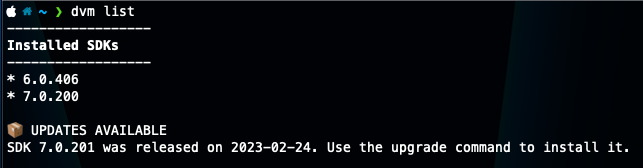
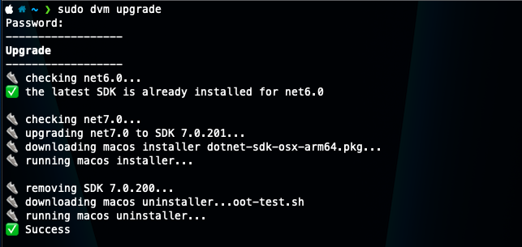
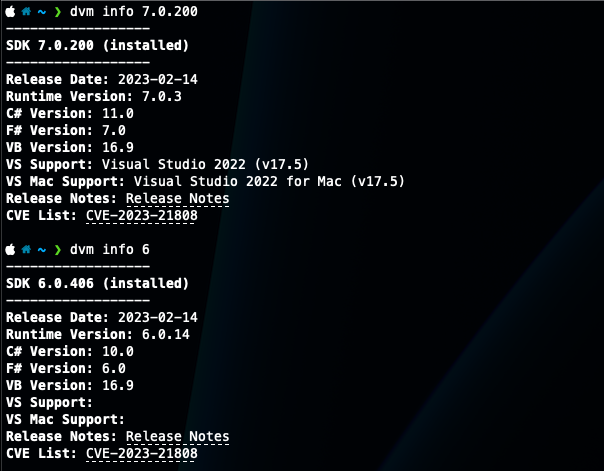
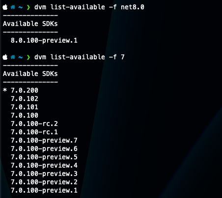
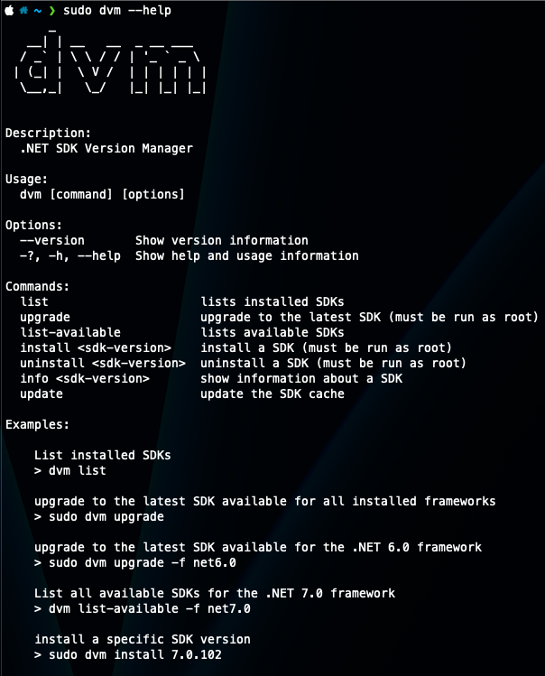

Dotnet SDK Version Manager
dvm is a cross-platform CLI for managing installed .NET SDKs — list what’s on your machine, check it against the real Microsoft release feed, upgrade to the latest, or install/uninstall a specific version — built with System.CommandLine for parsing and Spectre.Console for the figlet banner and status spinners. It was inspired by Dots, a similar tool for the Dart SDK.





What it does
Every command that needs release data hits the actual dotnet/core releases-index.json feed rather than a hardcoded version list, cached to disk for 10 minutes so repeated commands don’t refetch:
# list installed SDKs and flag any that are behind
dvm list
# upgrade to the latest SDK for every installed framework
sudo dvm upgrade
# install one specific version
sudo dvm install 7.0.102
# release date, runtime version, compiler versions, CVEs
dvm info 7.0.102
info in particular pulls more out of that feed than I expected — release date, runtime version, the C#/F#/VB compiler versions that shipped with it, Visual Studio support, and any CVEs with links straight to the advisories.
Root access, and platform gaps
Install and uninstall shell out to the platform’s real installer rather than reimplementing it — on macOS that’s downloading a .pkg and running /usr/sbin/installer, both requiring root. Uninstall on Linux skips a real uninstaller entirely and just deletes the SDK’s directories, which the code itself isn’t shy about:
// I don't like this...
WriteStep("removing SDK files");
await _netSdkLocal.Run("rm", $"-rf /usr/share/dotnet/sdk/{sdkVersion}", true);
await _netSdkLocal.Run("rm", $"-rf /usr/share/dotnet/shared/Microsoft.NETCore.App/{sdkVersion}", true);
And install on Linux never actually worked: DownloadLinuxInstaller() is a stub that just throws NotImplementedException. Combined with Windows being marked TBD in the README, that leaves macOS as the only platform where install/upgrade/uninstall ever ran end to end — everywhere else, only list, list-available, and info did anything.
It’s outdated — use one of these instead
The repo hasn’t been touched since March 2023, before .NET 8 shipped, and the gaps above were never closed. If you actually need to manage SDK versions today, reach for one of these instead:
dotnet sdk check— built into the SDK itself since .NET 6. It’sdvm list’s whole reason to exist, with zero extra tooling to install.global.json— pins the SDK version a given repo builds with. This, not a global switcher, is Microsoft’s actual answer to “which SDK is active here.”- dotnet-install.sh / .ps1 — the official install script, installs any SDK or runtime side by side without touching your default PATH.
dvmeven points at this exact URL asLinuxInstallScriptUrl— it’s just never called. - mise or asdf (with its dotnet-core plugin) if you want an actual nvm/pyenv-style manager with per-directory version switching.
- On Windows,
winget install Microsoft.DotNet.SDK.8is the least fussy path.
Still a fun read for the System.CommandLine + Spectre.Console combo, but there’s no real reason to reach for it over what’s already built into the SDK.